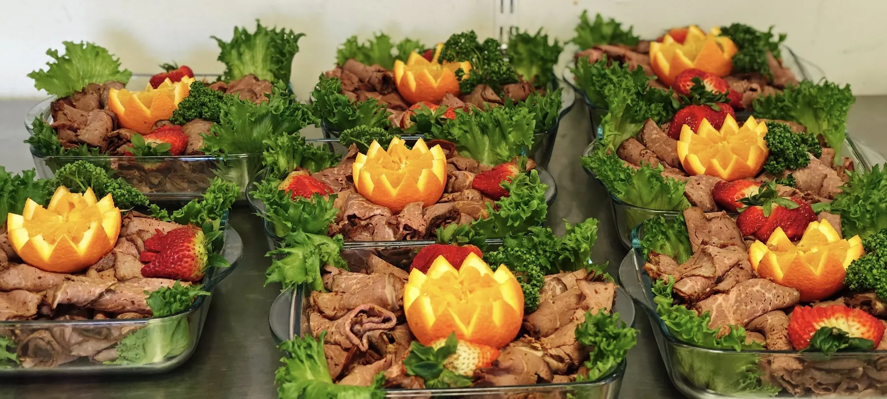
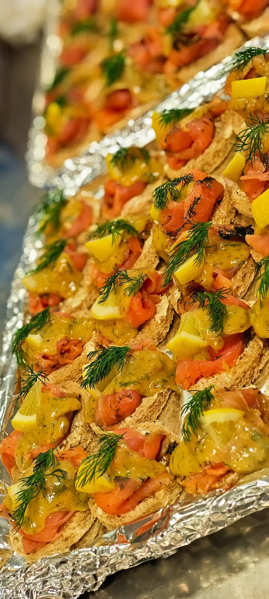
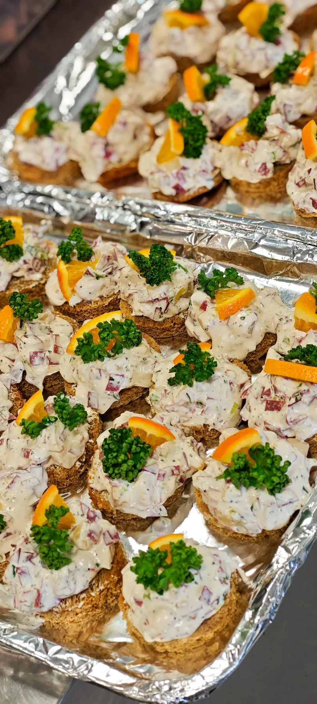
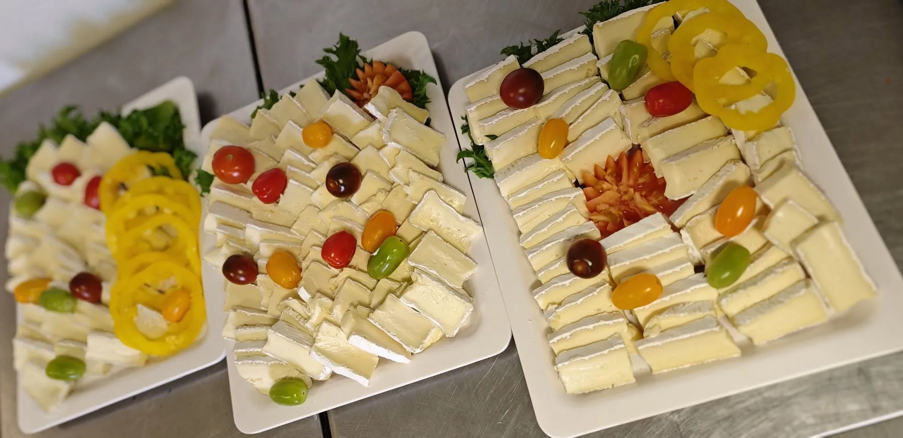
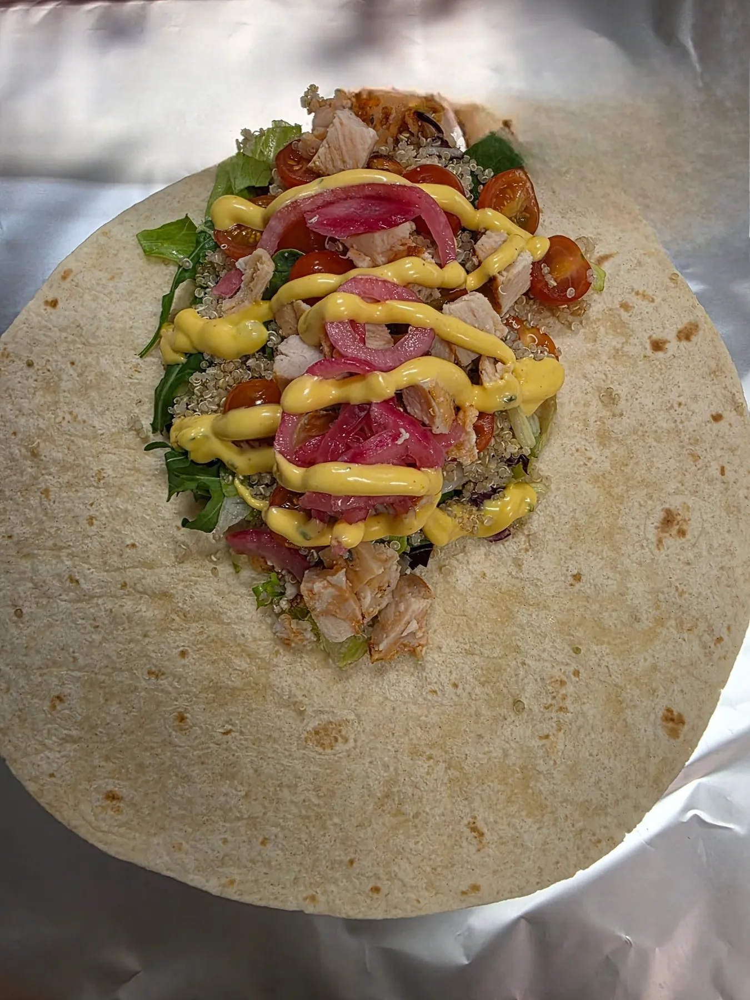

Lilla skärgårdsbuffén
195:-- Kall inkokt lax med romsås och finskuren gräslök
- Potatis- och fänkålssallad med yoghurt
- Färskostcrème med citron och dill
- Surdegsbröd av råg
0611-201 22 · 070-328 02 06
Lunch mån–fre 10.30–13.00
Beställ catering
Mat för alla tillfällen – från bröllop och dop till firmafester och konferenser. Låt oss sköta maten, så att du kan koncentrera dig på allt annat som behövs för en lyckad sammankomst.

Fest & vardag
Bröllop, dop, firmafester, konferenser och små möten. Vår specialitet är buffémat.
Porslin? Det fixar vi
Maten kommer färdig. Det är bara att ställa fram och njuta.
Speciella önskemål
Tveka inte att höra av dig, så hjälper vi dig att samla ihop det som passar just dig.
Om priserna: Rätter och priser är hämtade ur vår cateringmeny 2021 och julmeny 2025. Kontakta oss för aktuella priser, tillgänglighet och offert.
Är det något vi arbetar hårt med på Freddes Mat så är det våra bufféer, som är väldigt populära både till vardag och fest. Allt är noga smaksatt och upplagt så att både ögon och mage blir nöjda. Maten kommer färdig – det är bara att ställa fram och njuta!
+ Lägg till en varm vegetarisk lasagne med färsk spenat och fetaost 75:-
+ Lägg till en varm rotsaksgratäng 55:-
+ Lägg till en ostbricka med cambozola, gorgonzola, vindruvor, päron och saltade kex 95:-



En förrätt ska vara en liten aptitretare – en smakstart på vad som komma skall. Vissa av våra förrätter levereras i en mindre glas- eller porslinsform som du kan behålla om du vill, till en kostnad av 20 kr/st.
Toppas med rom, citron och färsk dill
85:-Med pepparrotscrème i tortillabröd
95:-(Smör, ost och sill) Inlagd sill, senapssill, gubbröra, lagrad Västerbottenost, tunnbröd och kokt potatis
125:-Med gravlax, senapssås, ägghalva med majonnäs och räka, rostbiff och salami
90:-Kall tomatsoppa med räkor och crème fraîche
90:-Med rostade pinjenötter och krossad chèvre
85:-Papaya, äpple, gurka och rödlök i glas med sweetchilivinägrett
90:-Med wasabimajonnäs
90:-Huvudpersonen i en meny. Den ska vara smakrik och ha en bra balans mellan sina komponenter. Vid köp av endast varmrätt ingår en nygräddad minibaguette och smör.
Med rårörda lingon, skirat dillsmör och potatismos
110:-Med skagenröra och kokt potatis
120:-Med dill, citron och skirat smör
125:-Med skagenröra och kokt potatis
155:-Med saffran, lax, torsk, räkor, lök, morötter, fänkål och kokt potatis
165:-Med kokt potatis, gräslök- och citronmajonnäs
155:-Med currysås och ris
110:-Med sotat kycklingbröst och vitlöksbröd
140:-Med sweetchilisås och ris
140:-Med timjankryddad rödvinssky och rotsakspuré
145:-Med paprika, rödlök, crème fraîche, tortillabröd och sallad
145:-Med jasminris
145:-Med gröna ärtor, skirat smör, rårörda lingon och potatismos
155:-Med ädelostsås och timjanstekt potatis
135:-Med kantarellsås, kokta grönsaker och kokt potatis
130:-Med svamp, grädde och potatismos
135:-På en bädd av kantareller med pepparsås och potatisgratäng
140:-Med viltsås, svartvinbärsgelé och potatisgratäng
145:-Med cognacssås och purjolökspotatis
155:-Med bearnaisesås och stekt klyftpotatis
165:-Med lök och stekt potatis
170:-(Fläsk, biff och oxfilé) med kantarellsås, pepparsås och bearnaisesås
195:-Med wokade grönsaker, rödvinssås och rotsaksgratäng
Ring för

Grillrätter kan man njuta av året om. Välj om vi grillar färdigt eller om ni själva grillar klart kött, fisk eller det vegetariska. Priset gäller färdiggrillat – väljer ni att grilla själva får ni 15 % rabatt.
Med avokadoröra och krämig pastasallad som toppas med vitlökskrutonger
175:-Med ajvar relish, surkål med bacon och timjan, picklad rödlök, potatissallad smaksatt med syrad grädde, dijonsenap och skurna primörer
185:-Med ramslökscrème, rostad potatissallad med balsamico, brynt smör, ruccola och rödlök
175:-Med chimichurricrème, grovskuren melonsallad med fetaost och färsk mynta. Serveras med smörstekt kulpotatis
185:-Med parmesancrème, grillad citron och ljummen potatissallad med legymer och färska örter
185:-Fylld med svamp- och örtstuvning på en bädd av wokade grönsaker och timjanstekt potatis
145:-Klassisk husmanskost är något vi aldrig tröttnar på. Här är ett urval av våra populäraste rätter som funkar både till fest och vardag. Sallad på säsongens grönsaker, smör och bröd ingår.
Med potatismos
110:-Med ris och saltgurka
145:-Med rimmat fläsk och senap, pannkakor med sylt och grädde
110:-Med gräddsås, rårörda lingon och potatismos
130:-Med rotmos och senap
110:-Med gräddsås, pressgurka och potatismos
120:-Med löksky, saltgurka och kokt potatis
110:-Med currysås och ris
130:-Eller gräddstuvad pytt med ägg och rödbetor
115:-Med färsk sparris, tomat, gräslök och kokt potatis
130:-Med kryddsmör, haricots verts och stekt potatis
120:-Med dillmajonnäs, pressgurka och kokt potatis
155:-Med varma grönsaker, äppelmos, sås och kokt potatis
120:-Med gräddsås, varma primörer, gelé och kokt potatis
155:-Med riven parmesanost
120:-Med skagenröra och kokt potatis
135:-Med skirat smör
120:-Med citron och dillstuvad potatis
155:-Med rödbetor och dillstuvad potatis
135:-Som lättare middag, lunch eller kanske till en picknick? Till varje quiche ingår sallad, smör och bröd. Salladerna kan portionsförpackas eller läggas upp i större skålar så att alla kan ta själva – och till dem ingår alltid smör och bröd.
Med spenat, ruccola, oliver och oregano
Med rökt renkött, svamp, lingon och svecia
Med rökt skinka, purjolök och lagrad ost
Ruccola, oliver och mozzarella
Curry och rostade grönsaker
Med lax, spenat och dill
Morötter, lök och cheddarost
Med sotat kycklingbröst, körsbärstomater och färsk basilika
85:-Med bakade rotsaker, granatäpple, rostad mandel, sultanrussin, grillad aubergine och harissacrème
85:-Med fetaost, tomat, rödlök, paprika, gurka och oregano
85:-Med rökt skinka, ost, granatäpple, rödlök, tomat och gurka
95:-Med kyckling, avokado, champinjoner, parmesan och krutonger
120:-Med varmrökt lax, rostade grönsaker och linser
120:-Med handskalade räkor, ägg, krasse, körsbärstomat och bulgur
120:-Här har vi komponerat ihop ett flertal vegetariska rätter. Vi kallar det ”Hälsans kök”. Smaklig måltid!
Med örtkrutonger
80:-Med lättsaltade kex
80:-Med vitlöksbröd
75:-Med vitlöksbröd
125:-Med stekt potatis, bostongurka och rostad lök
145:-Med rödbetor
130:-Med timjankryddad rödvinssky och rotsakspuré
145:-Med rödbetor
130:-Med rödlök, ostcrème och ris
145:-Med kantarellsås och kokt potatis
135:-Med potatissallad och rostad lök
145:-Med myntasås och ris
135:-Med jerusalemgratäng
150:-Med quornfärssås
140:-Med fetaost och färsk spenat
160:-Med sweetchilisås och ris
140:-Avsluta en fantastisk varmrätt med en liten dessert. Vissa desserter levereras i en mindre glas- eller porslinsform som du kan behålla om du vill, till en kostnad av 20 kr/st.
Med rårörda bär och vispad grädde
70:-Med vaniljsås
65:-Med lättvispad grädde
75:-85:-
Med vaniljsås
65:-I citronkräm
80:-Med vaniljsås
65:-Tänk vad skönt att slippa allt stök med julmat! Duka fram, ät och njut med nära och kära – och låt oss fixa maten. Vi levererar julmat från och med vecka 46 ända fram till dagen innan julafton, den 23 december. Minsta antal: julbuffé 6 st, julbord 8 st.
Inlagd sill, rödlök, senapssill, inlagd strömming, gravad lax m hovmästarsås, citron och färsk dill, potatissallad, ost, ägghalva m majonnäs och räka, oliver, saltgurka, kalvsylta, rödbetssallad, rostbiff, leverpastej, julskinka m senap, bladpersilja, kokt potatis, revbensspjäll, prinskorv, köttbullar och Janssons frestelse
215:-Ostkaka med sylt & grädde, pepparkaka med ädelost och marmelad, godis – skumtomte, polkakäpp och twistblandning
Totalt 295:-Inlagd sill, rödlök, senapssill, inlagd strömming, gravad lax m hovmästarsås, citron, färsk dill, potatissallad, ost, ägghalva m majonnäs och räka, oliver, saltgurka, kalvsylta, rödbetssallad, rostbiff, leverpastej, julskinka, senap, bladpersilja, kokt potatis, revbensspjäll, prinskorv, köttbullar och Janssons frestelse
Totalt 349:-Inlagd sill, rödlök, senapssill, årets sill, inlagd strömming, gravad lax m hovmästarsås, citron, färsk dill, varmrökt lax, inkokt lax, potatissallad, ost, ägghalva m majonnäs och räka, saltgurka, kalvsylta, rödbetssallad, rostbiff, leverpastej, julskinka, senap, oliver, bladpersilja, kokt potatis, revbensspjäll, prinskorv, köttbullar, rödkål, Janssons frestelse, ris à la Malta, ostkaka med sylt, pepparkaka och godis
Totalt 595:-Inlagd sill, rödlök, senapssill, inlagd strömming, gravad lax m hovmästarsås, citron och färsk dill, potatissallad, ost, ägghalva m majonnäs och räka, oliver, saltgurka, kalvsylta, rödbetssallad, rostbiff, leverpastej, julskinka m senap och bladpersilja
165:-Som jultallrik kall, med kokt potatis
180:-Ägghalva m majonnäs och räka, leverpastej m saltgurka, julskinka m senap, kalvsylta m rödbetssallad, gravlax m hovmästarsås, inlagd sill och köttbulle på spett
125:-Risgrynsgröt med mjölk, kanel och socker
100:-Kaffe/glögg, lussebulle och pepparkaka
60:-En skiva vörtlimpa med julskinka och senap
20:-Thekaka med sallad, julskinka och senap – eller med sallad, rödbetssallad och köttbullar
60:-Julmust, jullättöl, Loka eller övrig läsk 25:- · Julservett 5:-
25:-Till alla jultallrikar, julbuffén och julbordet ingår julknäckebröd, vörtlimpa och smör.
Begär offert
Kontakta oss för pris och offert, eller för att beställa catering. Har du speciella önskemål och behov? Tveka inte att höra av dig.